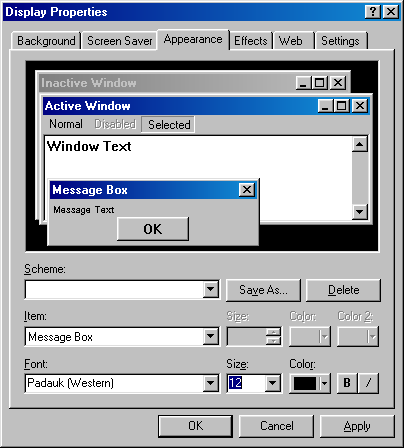
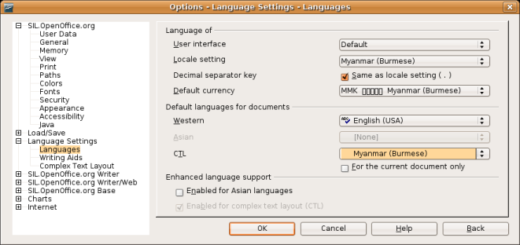
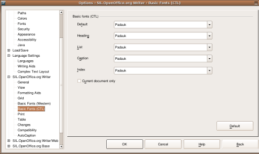
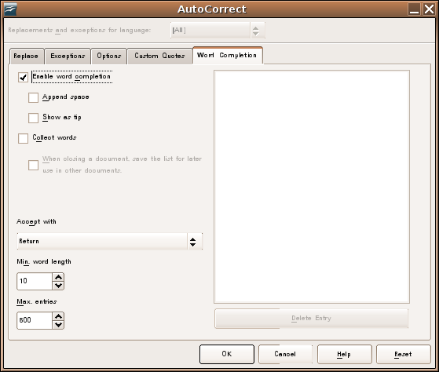
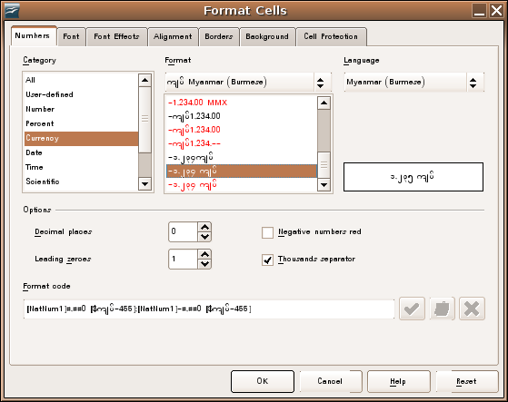
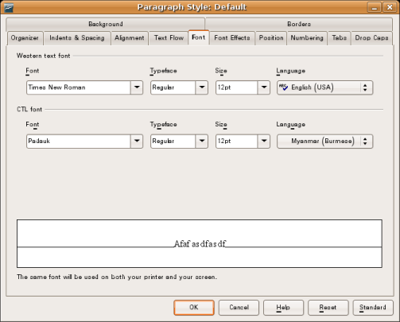

A Guide to Using Myanmar Unicode
Using OpenOffice with Myanmar
The default OpenOffice settings are not ideal for using Myanmar. This page outlines how it can be set up to work better with Myanmar Unicode. These instructions assume that you are using at least OpenOffice 3.1 or a special build of OpenOffice, which has had Myanmar support added.
There are several configuration steps that are needed to use OpenOffice with Myanmar language after installation.
Changing the User Interface Font
This step is essential if you have enabled the Burmese User Interface using a Myanmar Language Pack
OpenOffice uses the default System font for displaying Menus, dialog boxes etc. This means that if the System font does not have Myanmar glyphs, then you will see blank squares if you have enabled the Burmese User Interface or when you type Myanmar in the Find and Replace dialog or select Myanmar Numbers in the Format Cells dialog.
On Windows you can change the font as follows:
- Right click on the desktop and choose Properties.
- Click the Appearance Tab and click the Advanced button.
- Change the Item to Message Box
- Change the font to a Myanmar font e.g. Padauk. You may want to adjust the size as well.
- Change the Menu, ToolTip, Active Title Bar font in the same way.
- Click OK and Apply.
On Linux you can change the font as follows:
- Open the Gnome Font dialog. e.g. System->Preferences->Font.
- Change the application font to a Myanmar font. You may want to adjust the size as well.
Enabling Myanmar Locale
- Open OpenOffice.org Writer.
- Choose Tools->Options from the Menu and go to the Language Settings / Languages section on the left hand side.
- Change the Locale setting to Myanmar (Burmese) - this will take affect the next time you restart OpenOffice.
- Tick the item "Enabled for complex text layout (CTL)" (at the bottom).
- Change the CTL language to Myanmar from the drow down list.

- Click OK and reopen Tools->Options and goto the OpenOffice.org Writer / Basic Fonts (CTL) Section. (You need to reopen the Options dialog for the CTL section to appear)
- Change the default font for CTL to a Myanmar Unicode font that is installed on your computer e.g. Padauk.
- Click OK.
- Choose Tools->Auto Correct from the menu.
- In the Word Completion tab untick Collect words.
Myanmar features
The main Myanmar specific features that are available are:
- Formating of numbers/currency in Myanmar language.
- Open OpenOffice.org Calc.
- Right click on a cell and choose Format Cells
- In the Number tab you can select Myanmar.
- Choose an appropriate number format.
- Sorting according to Myanmar Dictionary Order.
- Select the columns that you want to sort.
- Choose Data->Sort and select the Options tab.
- Change the language to Myanmar (if you have restarted since setting the Myanmar locale in Options - Language Settings - Languages then it should already be selected).

Configuring Styles
You may want to change the default style of an existing document to use a Myanmar Unicode font automatically.
- Open the Styles and Formating dialog from the Format menu if it is not already open.
- Right click on Default and choose Modify.
- Change the CTL language and font as appropriate.
Pango/GTK>>
 This website is licensed under a Creative Commons Attribution-ShareAlike 2.5 License except where another license is explicitly stated.
This website is licensed under a Creative Commons Attribution-ShareAlike 2.5 License except where another license is explicitly stated.